Module Overview
This module introduces object-oriented design in MicroPython, BLE-based wireless communication between two Pico W boards, and obstacle avoidance using an IR sensor.
Required Components
Step-by-Step Guide
Step 1: Object-Oriented Design for the Project
To maintain modularity and reusability, we define each hardware component as a Python class. This approach keeps logic modular and makes future enhancements easier (e.g., adding camera, GPS, more sensors).
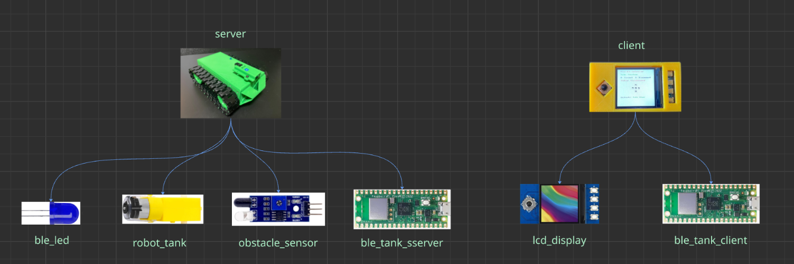
| Class Name | Purpose |
|---|---|
| RobotTank | Encapsulates motor control logic (forward, backward…) |
| BLETankServer | Advertises BLE name and handles command reception |
| BLELED | Handles LED indicator status for BLE state |
| ObstacleSensor | Monitors IR sensor and sends obstacle status |
| ble_advertising.py | Handles BLE advertising packets and settings (server-side utility) |
| BLETankClient | Scans, connects to server, sends commands |
| LCDDisplay | Displays UI, joystick control, status feedback |
Step 2: Wiring and Circuit Connections
This section details the wiring and circuit connections for the BLE-controlled robot tank. Proper wiring ensures all components communicate and function as expected. Refer to the diagram below for a visual guide.
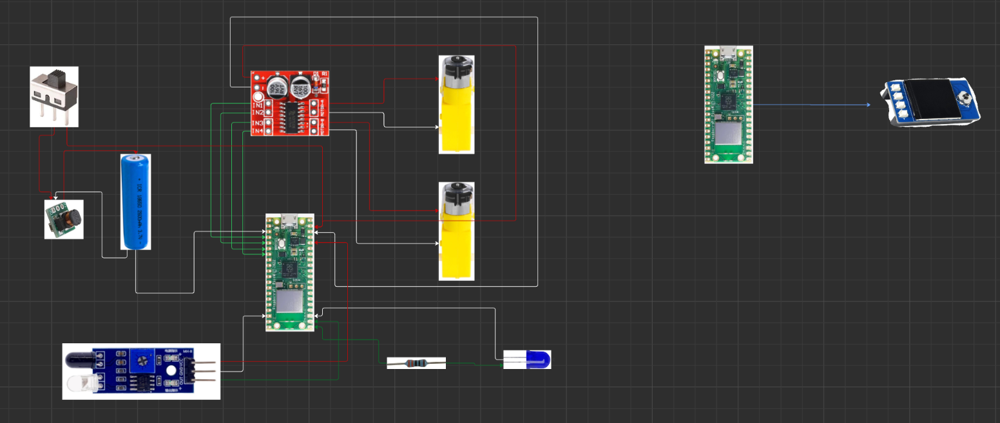
Robot Tank Circuit DiagramWiring Ports:
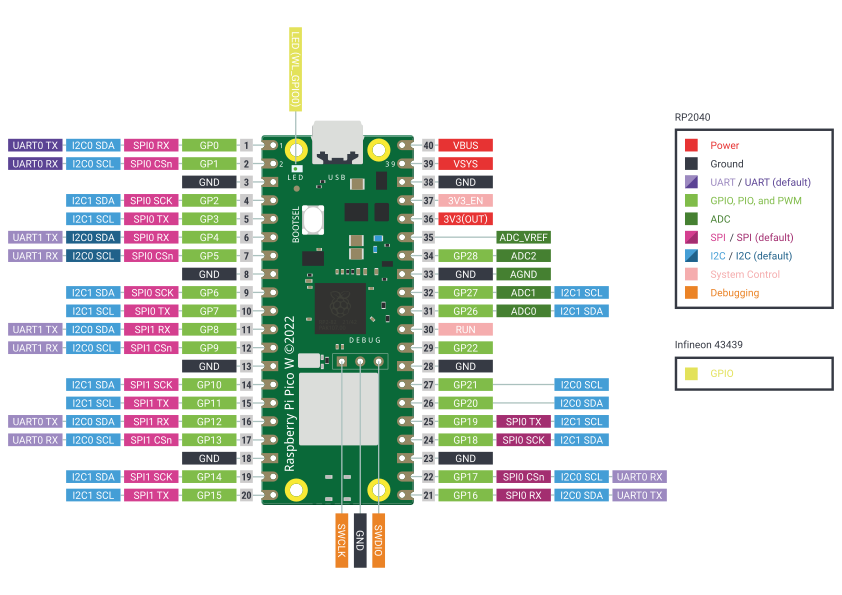
Raspberry Pi Pico W Pinout- Pico W (Tank)
- GPIO 2: Motor A IN1
- GPIO 3: Motor A IN2
- GPIO 4: Motor B IN1
- GPIO 5: Motor B IN2
- GPIO 17: IR Obstacle Sensor Output
- GPIO 16: BLE LED
- HW-354 Motor Driver
- IN1, IN2, IN3, IN4: Connected to Pico GPIOs as above
- VCC: 5V from booster module
- GND: Common ground
- Motor outputs: To DC motors
- IR Obstacle Sensor
- VCC: 3.3V or 5V
- GND: Common ground
- OUT: GPIO 17 (Tank)
- BLE LED (Tank)
- Signal: GPIO 16
- VCC/GND: Power and ground
- LCD Display (Controller)
- SPI pins: Connect as per LCD documentation
- VCC/GND: Power and ground
- Power
- 18650 Battery → DC-DC Booster → 5V to motor driver and Pico
- Sliding switch in series with battery for power control
Step 3: IR Sensor Working Principle
An IR (Infrared) obstacle sensor is a simple electronic device that detects the presence of an object using infrared light. It typically consists of an IR LED (emitter) and a photodiode or phototransistor (receiver) placed side by side. The IR LED emits invisible infrared light, which bounces off nearby objects. If an object is present, the reflected IR light is detected by the receiver, causing a change in its output signal.
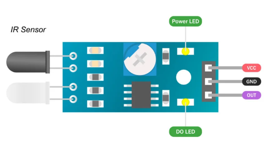
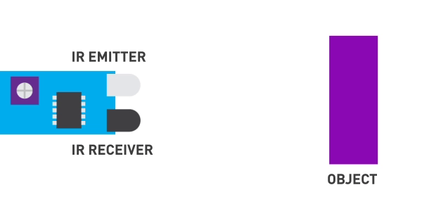
How It Works:
- The IR LED continuously emits infrared light.
- When no object is present, the IR light does not reflect back to the receiver, so the output remains HIGH (logic 1).
- When an object comes close, the IR light is reflected and detected by the receiver, causing the output to go LOW (logic 0).
- This change in output can be read by a microcontroller to detect obstacles or trigger actions.
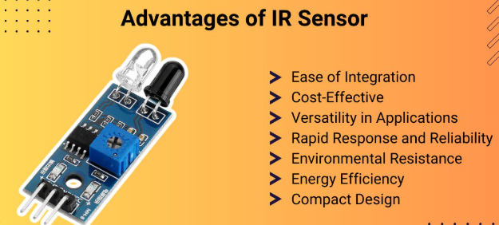
Pros: IR Sensor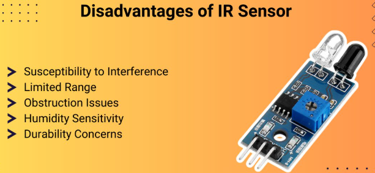
Cons: IR SensorAdvantages: Simple, inexpensive, and easy to use for short-range detection (2–30 cm). Works well for basic obstacle avoidance in robotics.
Limitations: Performance can be affected by ambient sunlight, reflective or transparent surfaces, and the angle of the object.
- Inexpensive & simple
- Good for short-range (2–30cm)
- Easy to use with digital pins
- Poor accuracy in sunlight
- Not effective for transparent objects
- Angle sensitivity
Step 4: BLE Communication Overview
Bluetooth Low Energy (BLE) is a wireless communication protocol designed for short-range, low-power data exchange. BLE is widely used in IoT devices, wearables, and robotics because it allows devices to communicate efficiently while consuming minimal energy. BLE operates in the 2.4 GHz ISM band and is optimized for sending small amounts of data periodically, making it ideal for sensor data, control commands, and status updates.
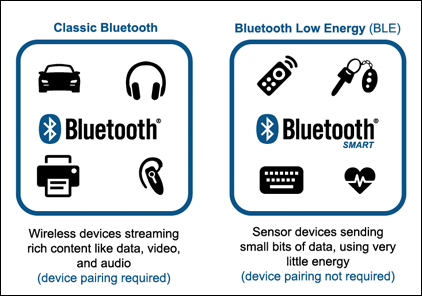
BLE Concepts:
- Peripheral (Server): A device that advertises its presence and waits for connections (e.g., the robot tank).
- Central (Client): A device that scans for peripherals and initiates connections (e.g., the controller).
- Advertising: The process by which a peripheral broadcasts its availability and basic information (such as its name or services) to nearby devices.
- Connection: Once a central connects to a peripheral, they can exchange data using defined services and characteristics.
- Services & Characteristics: BLE organizes data into services (groups of related data) and characteristics (individual data points or commands).
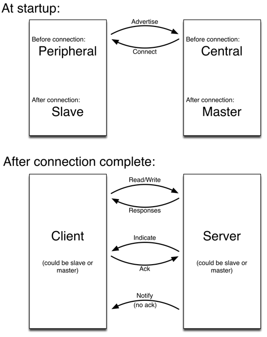
How BLE Works in This Project:
- The robot tank (server) advertises itself with the name "PicoRobotTank" and waits for a connection.
- The controller (client) scans for BLE devices and connects to the tank when it finds the correct name.
- Once connected, the controller sends commands (such as "F" for forward, "B" for backward, etc.) to the tank using BLE characteristics.
- The tank receives these commands, executes the corresponding actions (move, stop, turn), and can send status updates back (such as "Obstacle Detected" or "Path Clear").
- BLE ensures that communication is fast and energy-efficient, allowing for real-time control and feedback.
In summary, BLE enables reliable, low-power wireless control between the Pico W controller and the robot tank, making it possible to send commands and receive feedback instantly during operation.
Step 5: Introduction to LCD and SPI Communication
The controller in this project uses a Waveshare 1.3" Pico LCD Display, which communicates with the Raspberry Pi Pico W using the SPI (Serial Peripheral Interface) protocol. Understanding how LCDs and SPI work is essential for displaying information and creating interactive user interfaces in robotics projects.
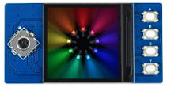
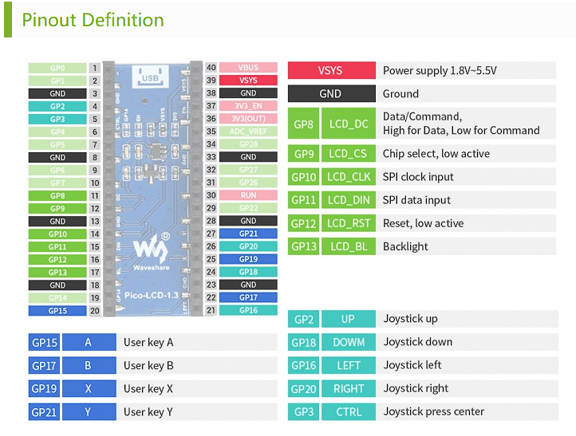
What is SPI? SPI is a high-speed, synchronous serial communication protocol commonly used to connect microcontrollers to peripherals such as displays, sensors, and memory devices. It uses four main lines: SCK (clock), MOSI (Master Out Slave In), MISO (Master In Slave Out), and CS (chip select).
- SCK: Serial clock signal generated by the master (Pico W).
- MOSI: Data sent from master to slave (Pico W to LCD).
- MISO: Data sent from slave to master (not always used by LCDs).
- CS: Chip select, used to activate the LCD for communication.
SPI Working Principle: SPI (Serial Peripheral Interface) is a synchronous serial communication protocol used to transfer data between a microcontroller (master) and one or more peripheral devices (slaves). SPI uses separate lines for data and clock signals, allowing for full-duplex communication. The master generates the clock signal (SCK), and data is transmitted from the master to the slave via MOSI (Master Out Slave In) and from the slave to the master via MISO (Master In Slave Out). The CS (Chip Select) line is used to select which slave device is active. SPI is fast, simple, and ideal for short-distance communication with devices like LCDs, sensors, and memory chips.
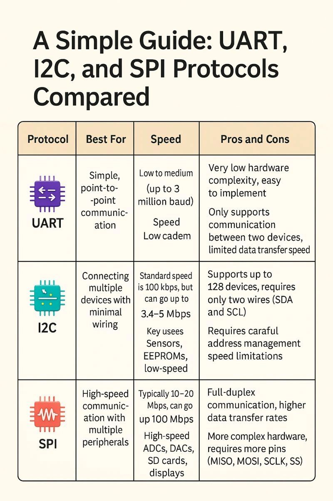
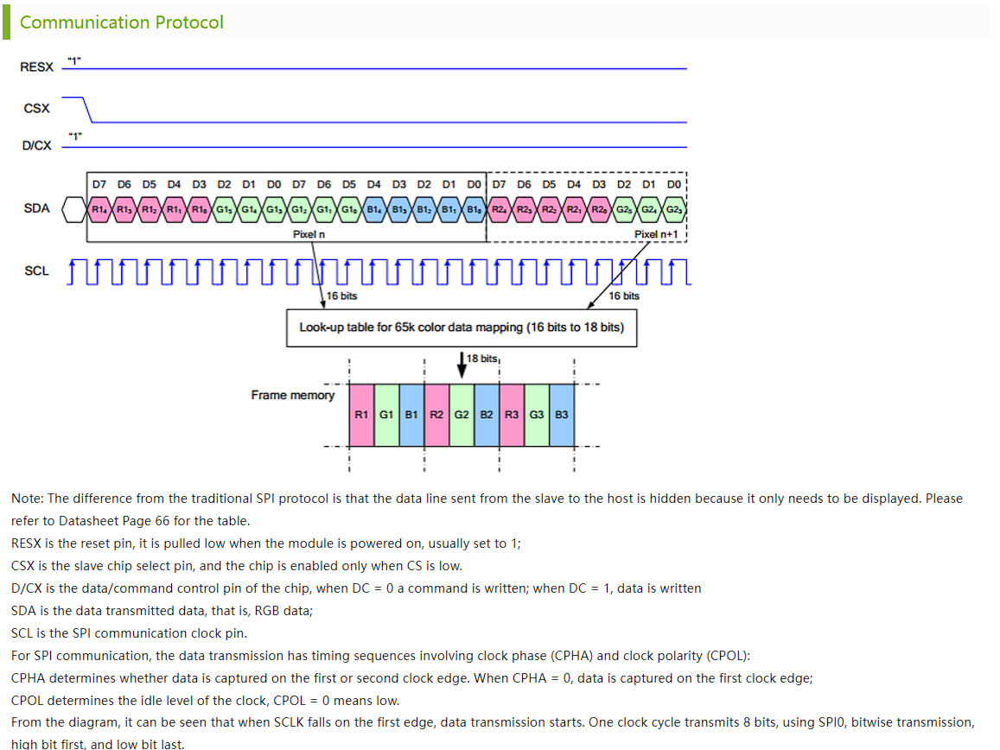
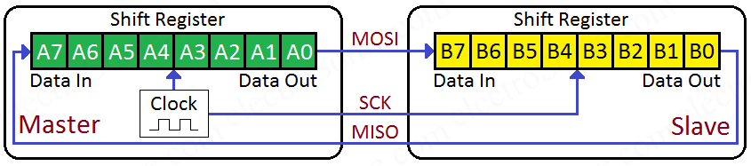
How the LCD is Used: The LCD displays real-time information such as robot status, BLE connection state, joystick direction, and obstacle alerts. The display is updated by sending commands and data over SPI from the Pico W to the LCD controller chip.
Using an LCD with SPI allows for fast, efficient updates and enables the creation of graphical user interfaces for robotics projects. In this project, the LCD provides immediate feedback to the user, making the robot easier to control and monitor.
Step 6: Controller (Client) Code Summary
Below is the main code for the BLE controller. This script manages the LCD display, BLE connection, joystick/button input, and obstacle status updates. It provides real-time feedback and control for the robot tank.
from machine import Pin
from lcd_display import LCDDisplay
from ble_tank_client import BLETankClient
import time
# Initialize LCD
lcd = LCDDisplay()
# Define Buttons
button_b = Pin(17, Pin.IN, Pin.PULL_UP) # Connect
button_x = Pin(19, Pin.IN, Pin.PULL_UP) # Disconnect
# Joystick pins
up = Pin(2, Pin.IN, Pin.PULL_UP)
down = Pin(18, Pin.IN, Pin.PULL_UP)
left = Pin(16, Pin.IN, Pin.PULL_UP)
right = Pin(20, Pin.IN, Pin.PULL_UP)
ctrl = Pin(3, Pin.IN, Pin.PULL_UP) # Center = Stop
obstacle_status = "Unknown"
def on_rx(msg):
global obstacle_status
print("📩 Received from tank:", msg)
if msg in ["Obstacle Detected", "Path Clear"]:
obstacle_status = msg
draw_gui(selected=last_command)# update the screen
# Setup BLE
ble = BLETankClient()
ble.on_rx = on_rx
last_command = ""
connection_status = "Disconnected"
tank_name = "PicoTank"
def draw_gui(selected=""):
lcd.fill(lcd.white)
lcd.text("Pico BLE Controller", 20, 10, lcd.red)
lcd.text("Tank: " + tank_name, 20, 30, lcd.green)
lcd.text("B: Connect X: Disconnect", 20, 50, lcd.blue)
lcd.text("Status: " + connection_status, 20, 70, lcd.red)
# Arrow layout
# Arrow color logic
# ASCII arrow alternatives
def color(key): return lcd.red if key == selected else lcd.black
lcd.text("^", 115, 100, color("F"))
lcd.text("v", 115, 140, color("B"))
lcd.text("<", 95, 120, color("L"))
lcd.text(">", 135, 120, color("R"))
lcd.text("X", 115, 120, color("S")) # Stop
# Outline buttons (like a D-pad)
lcd.rect(114, 99, 10, 10, color("F")) # Up
lcd.rect(114, 139, 10, 10, color("B")) # Down
lcd.rect(94, 119, 10, 10, color("L")) # Left
lcd.rect(134, 119, 10, 10, color("R")) # Right
lcd.rect(114, 119, 10, 10, color("S")) # Stop
# Obstacle status label
lcd.text("Obstacle:", 20, 180, lcd.black)
lcd.text(obstacle_status, 100, 180, lcd.red if obstacle_status == "Obstacle!" else lcd.green)
lcd.show()
draw_gui()
while True:
try:
# Handle Connect
if not button_b.value():
if not ble.connected:
print("🔗 Button B pressed: Connecting...")
connection_status = "Connecting..."
draw_gui()
ble.connect()
time.sleep(0.5)
# Handle Disconnect
if not button_x.value():
if ble.connected:
print("❌ Button X pressed: Disconnecting...")
ble.ble.gap_disconnect(ble.conn_handle)
connection_status = "Disconnected"
draw_gui()
time.sleep(0.5)
# Refresh status if changed externally
if ble.connected and connection_status != "Connected":
connection_status = "Connected"
print("✅ BLE connected")
draw_gui()
elif not ble.connected and connection_status != "Disconnected":
connection_status = "Disconnected"
print("🔌 BLE disconnected")
draw_gui()
# Handle joystick movement
command = ""
if not up.value():
command = "F"
elif not down.value():
command = "B"
elif not left.value():
command = "L"
elif not right.value():
command = "R"
elif not ctrl.value():
command = "S"
if command and command != last_command:
ble.send_command(command)
print(f"➡️ Sent command: {command}")
draw_gui(selected=command)
last_command = command
elif not command and last_command:
draw_gui(selected=None)
last_command = ""
time.sleep(0.1)
except KeyboardInterrupt:
print("🛑 Script interrupted")
if ble.connected:
ble.send_command("S")
ble.ble.gap_disconnect(ble.conn_handle)
break
How the Code Works:
- LCD Initialization: Sets up the LCD for displaying status, joystick arrows, and obstacle alerts.
- Button and Joystick Setup: Configures GPIO pins for connect/disconnect buttons and joystick directions.
- BLE Client: Initializes the BLE client and sets up a callback to handle messages from the tank.
- draw_gui Function: Updates the LCD with current status, joystick selection, and obstacle information.
- Main Loop: Continuously checks for button presses, joystick movement, and BLE connection status. Sends commands to the tank and updates the display in real time.
- Obstacle Feedback: When the tank sends "Obstacle Detected" or "Path Clear", the display updates immediately to alert the user.
- Graceful Exit: On keyboard interrupt, the robot stops and disconnects safely.
Step 7: Tank (Server) Main Code
Below is the main code for the BLE tank server. This script manages the robot's motors, obstacle sensor, BLE server, and command handling. It enables the tank to receive commands from the controller, drive the motors, and send obstacle status updates back to the controller in real time.
from machine import Pin
import bluetooth
import time
from robot_tank import RobotTank
from ble_tank_server import BLETankServer
from ble_led import BleLED
from obstacle_sensor import ObstacleSensor
# 🔧 Setup Components
led = BleLED()
tank = RobotTank(2, 3, 4, 5)
obstacle = ObstacleSensor()
# Store last command to restore after obstacle clears
last_command = "S"
def on_rx(command):
global last_command
print("📩 Command received:", command)
led.toggle()
try:
if command in ["F", "B", "L", "R"]:
last_command = command
if obstacle.is_obstacle():
print("⚔ Obstacle detected — stopping")
tank.stop()
else:
if command == "F":
tank.forward()
elif command == "B":
tank.backward()
elif command == "L":
tank.turn_left()
elif command == "R":
tank.turn_right()
elif command == "S":
tank.stop()
last_command = "S"
else:
print("⚠️ Unknown command")
except Exception as e:
print("❌ Error executing command:", e)
# Setup BLE
ble = bluetooth.BLE()
ble_server = BLETankServer(ble, on_rx)
print("🛡️ Pico Robot Tank is waiting for BLE connection...")
connected = False
try:
while True:
is_connected = bool(ble_server._connections)
if is_connected != connected:
connected = is_connected
if connected:
print("✅ BLE Connected.")
led.on()
else:
print("🔄 Waiting for BLE connection...")
led.off()
if not connected:
led.blink()
else:
changed, state = obstacle.has_changed()
if changed:
if state == 0:
print("⚔ Obstacle Detected")
tank.stop()
ble_server.send("Obstacle Detected")
print("📤 Message sent to client.")
else:
print("✅ Path Clear")
ble_server.send("Path Clear")
print("📤 Message sent to client.")
if last_command != "S":
on_rx(last_command)
time.sleep(0.1)
except KeyboardInterrupt:
print("🛑 Script stopped by user")
tank.stop()
led.off()
How the Code Works:
- Component Setup: Initializes the BLE LED, motor driver, and obstacle sensor for the tank.
- BLE Server: Sets up the BLE server and a callback to handle commands from the controller.
- Command Handling: When a command (F, B, L, R, S) is received, the tank moves accordingly and stores the last command for recovery after obstacles.
- Obstacle Detection: If an obstacle is detected, the tank stops and notifies the controller. When the path is clear, the last command is restored.
- Status Feedback: Sends "Obstacle Detected" or "Path Clear" to the controller for real-time updates.
- Connection State: The LED indicates BLE connection status (on, off, or blinking).
- Graceful Exit: On keyboard interrupt, the motors stop and the LED turns off safely.
Complete YouTube Tutorial
Watch the full step-by-step video tutorial for this BLE-controlled smart robot tank project. The video covers hardware setup, wiring, coding, BLE communication, obstacle detection, and live demonstrations. Follow along for a complete build and test experience!